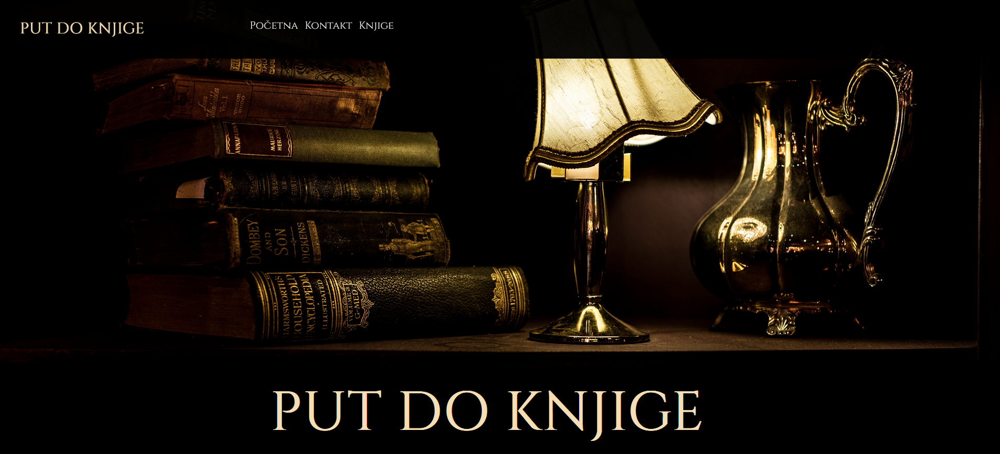

Rad je nastao na jednonedeljnoj radionici BEST Design Week.
A sad neki čudni radovi (vama čudni, meni su okej)
Kako ide Cica do škole od Jajin'ca
fakultetski projekat infografika koja predstavlja
bukvalno ono što mu naziv kaže put od kuće do škole, ali i kritikuje kako taj put izgleda -
lepo ali prljavo!
BAVLJU
opet fakultetski
projekat, neka zezancija s ilustrovanjem, animacijom i interaktivnim
valeri za poneti
još jednom fakultetski
projekat skup svega što je u mojoj torbi, introspekcija, ,,svi smo ljudi" taj neki fazon rada